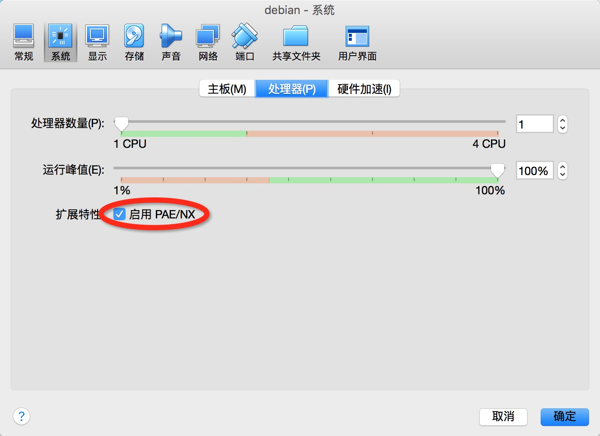

首页-Lab1 系统引导-Lab2 系统调用-Lab3 进程管理-Lab4 进程同步-Lab5 文件系统
Lab2-Lab4实验批改已经结束, 实验成绩由于一些原因不再公布, 还剩一部分收尾工作还在进行, 在这里先告知一下作业有问题的同学, 请及时联系助教, 看到的同学互相之间也请相互提醒转告一下, 此外, 对于草稿状态的同学我们也决定不对其进行扣分处理, 不管是提交状态还是草稿状态, 我们都将其视为提交状态
关于为什么要使用Linux进行实验, 而不是Windows, 请点击这里.
我们推荐你在你的电脑上主机上先安装一个Virtualbox虚拟机,然后在虚拟机中安装一个Linux操作系统(Ubuntu发行版本), 因为大多数专业必修课的实验都会在Linux操作系统上进行.
我们准备了一个32位的debian虚拟机镜像文件, 用户名密码以及 root 密码都为 os2016。为了能够使用该虚拟机, 你可能需要在 virtualbox 中设置开启硬件虚拟化:

你也可以使用你电脑上已有的Linux来进行实验, 但你可能需要花少量时间对实验环境进行配置.下面的一些资料将介绍如何构建开发环境。
除了教材和讲义之外，学生也可以从其它学术出版物以及互联网获得有用的信息。在完成作业的过程中，允许参考各种书籍、论文、以及互联网页面来获得帮助，这种行为是被鼓励的，因为在解决实际问题的过程中，寻找有用的参考信息也是解决问题的一部分。在实验过程中,严禁不诚信的行为。
在学习和实验的过程中, 你会遇到大量的问题. 除了参考课本内容之外, 你需要掌握如何获取其它参考资料, 尤其是英文资料.
为了查找英文资料, 你应该使用下表中推荐的网站:
| 搜索引擎 | 百科 | 问答网站 | |
| 推荐使用 | http://www.google.com | http://en.wikipedia.org | http://stackoverflow.com |
| 不推荐使用 |
一些说明:
前束范式分别在百度百科, 中文维基百科和英文维基百科中的内容.官方手册包含了查找对象的所有信息, 关于查找对象的一切问题都可以在官方手册中找到答案. 通常官方手册的内容十分详细, 在短时间内通读一遍基本上不太可能, 因此你需要懂得"如何使用目录来定位你所关心的问题". 如果你希望寻找一些用于快速入门的例子, 你应该使用搜索引擎.
这里列出一些本课程中可能会用到的手册:
jyy为我们准备了一个Linux入门教程，如果你是第一次使用Linux，请阅读这里。